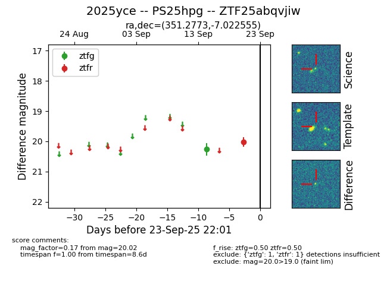

FINK: ZTF25abqvjiw
Lasair: ZTF25abqvjiw
ALeRCE: ZTF25abqvjiw
TNS: 2025yce
YSE: 2025yce
ZTF25abqvjiw (ztf,fink)
2025yce (tns,yse)
PS25hpg (panstarrs)
equatorial (ra, dec) = (351.2773,-7.02256)
galactic (l, b) = (73.4519,-61.29830)

last ztfg=20.26, ztfr=20.02
1 ztfg, 1 ztfr detections